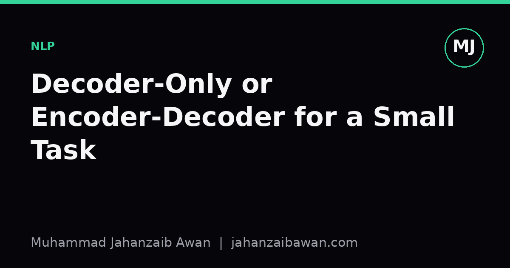

Decoder-Only or Encoder-Decoder for a Small Task
When you have a modest dataset and a clear input-output shape, the architecture you pick matters more than the parameter count you can borrow.

Why this choice still matters
It is tempting to assume that architecture choice no longer matters because large decoder-only models can be prompted or fine-tuned to do almost anything. For big, loosely specified tasks that is often true. But for a small task, one with a few thousand labelled examples, a narrow and well-defined mapping from input to output, and a tight compute budget, the architecture you pick still has real consequences for sample efficiency, training stability, and how easy the model is to evaluate honestly.
A small task changes the calculus because you cannot rely on scale to paper over a mismatch between the model's inductive biases and the structure of the problem. If your inputs and outputs have a clean, almost mechanical relationship, such as translating a structured query into SQL, normalising addresses, or summarising a short paragraph into one sentence, the way the model is allowed to attend to the input versus the output becomes a design decision, not an afterthought.
I think the decision is best framed around one question: does your task have a clear, fixed-direction transformation from a well-defined input to a well-defined output, or is it closer to open-ended continuation where input and output blur together? Answering that honestly points you towards one family or the other far more reliably than looking at leaderboard scores from unrelated tasks.
What the two architectures actually buy you
A decoder-only transformer processes everything as one continuous sequence, with causal masking so each position can only see what came before it. When you fine-tune it for a task, you typically concatenate the input and the target, mark where the target begins, and train the model to predict the next token throughout, usually masking the loss on the input portion. This is simple, flexible, and benefits enormously from pretraining, because the model has already seen huge amounts of text in exactly this next-token format.
An encoder-decoder transformer splits the work. The encoder sees the entire input at once, with full bidirectional attention, and builds a representation of it. The decoder then generates the output token by token, attending both to its own previous outputs and, crucially, to the full encoded input via cross-attention. This separation means the model never has to guess which tokens belong to the input versus the output: the architecture encodes that distinction structurally rather than relying on a learned convention.
In practice this distinction matters most when the input is long relative to the output, or when the input needs to be understood holistically before any output token can be sensibly produced. Consider a worked example: converting a two-sentence customer complaint, perhaps forty tokens, into a one-line category and priority tag, perhaps six tokens. With an encoder-decoder, the encoder spends its full capacity understanding the forty input tokens bidirectionally, then the decoder has an easy six-step generation job, cross-attending to that rich representation at every step. With a decoder-only setup, the model processes the forty input tokens causally, meaning early input tokens are encoded without seeing later ones, which is a slightly awkward way to build understanding of something you could see all at once.
That said, the decoder-only model is not crippled here. With enough pretraining, it has learned to use causal attention effectively even for understanding tasks, and the gap in a case like this is often small, especially once you fine-tune on even a modest number of examples. The gap tends to widen as the input grows longer and the output remains short and structured, because the encoder-decoder's bidirectional, undiluted focus on the input becomes a bigger relative advantage.
Sample efficiency and failure modes on small data
With a small task, the question that matters most is which architecture reaches acceptable performance with fewer labelled examples, and which fails more gracefully when it is wrong. Encoder-decoder models, because the input-output boundary is architectural rather than learned from a template, tend to need fewer examples to learn the basic shape of the task. If you have, say, two thousand training pairs, I would expect an encoder-decoder to pick up the pattern of where the input ends and the output begins more reliably than a decoder-only model trained from scratch on the same data, simply because it does not have to learn that convention at all.
However, if you are fine-tuning a decoder-only model that already has strong instruction-following behaviour from pretraining, this advantage mostly evaporates, because the model has effectively already learned the convention of input-then-output from millions of similar examples elsewhere. In that regime the practical difference shrinks to something closer to a wash, and other factors, such as available checkpoints, tooling, and inference cost, start to dominate the decision.
Failure modes differ too, and this matters for evaluation. Decoder-only models trained on short data can sometimes drift into repeating or rephrasing the input rather than transforming it, particularly early in training, because the next-token objective does not distinguish copying from genuine transformation as sharply as a dedicated decoder does. Encoder-decoder models are less prone to this specific failure because the decoder's only job is to produce output conditioned on an encoded input it cannot directly copy token for token without the cross-attention explicitly surfacing it. Neither failure mode is fatal, but if your evaluation set is small, a few pathological outputs can distort your metrics, so it is worth inspecting actual generations rather than trusting a single aggregate score.
A practical decision rule
If I had to collapse this into a rule of thumb, it would be this: when the input is long and information-dense relative to a short, structured output, and you do not have access to a strongly instruction-tuned decoder-only model of sufficient quality, lean towards encoder-decoder. When the task is more open-ended, when input and output lengths are comparable, or when you already have a capable pretrained decoder-only model and only modest fine-tuning data, lean towards decoder-only and let the existing pretraining do the heavy lifting.
Either way, the architecture choice should not be where your rigour ends. Hold out a genuinely unseen test split, check for leakage between near-duplicate examples in train and test, and look at raw generations before trusting any single number. A small task punishes sloppy evaluation just as readily as it punishes the wrong architecture, and the two mistakes are easy to confuse when your dataset is too small to average them out.